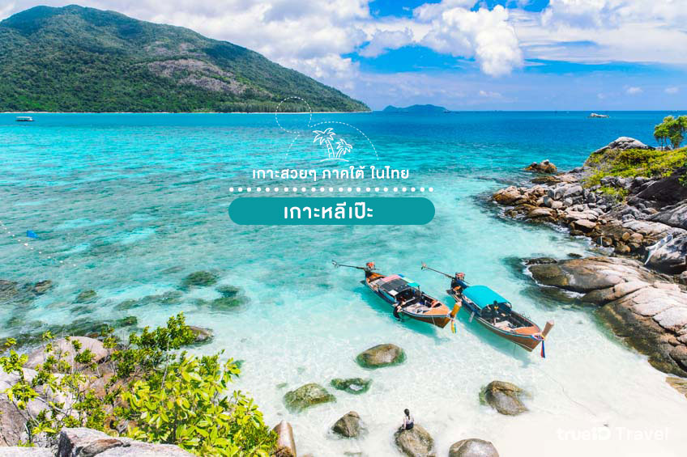

เกาะหลีเป๊ะ สตูล
เกาะหลีเป๊ะ ตั้งอยู่ในอุทยานแห่งชาติตะรุเตา จังหวัดสตูล ที่นี่อุดมไปด้วยความสวยงามธรรมชาติของปะการังรอบเกาะ รวมถึงหาดทรายสีขาวละเอียด น้ำทะเลที่ใสปิ๊ง และที่สำคัญคือ เป็นแหล่งที่อยู่ของเหล่าปลานีโม่ หรือ ปลาการ์ตูนนั่นเอง พร้อมด้วยดอกไม้ทะเลที่งดงาม ใครที่อยากดำน้ำชมความสวยงามใต้ท้องทะเล ชายหาดบนเกาะหลีเป๊ะ มีทั้งหมด 3 หาดด้วยกัน คือ หาดพัทยาหรือบันดาหยา หาดชาวเลหรือหาดซันไรซ์ และอ่าวประมง ซึ่งชายหาดแต่ละหาดสามารถเดินเชื่อมถึงกันได้ อีกทั้งยังสวยงามและบรรยากาศดีทำให้เกาะหลีเป๊ะคืออีกแห่งที่ต้องมาเที่ยว
ชายหาดบนเกาะหลีเป๊ะ มีทั้งหมด 3 หาดด้วยกัน คือ หาดพัทยาหรือบันดาหยา หาดชาวเลหรือหาดซันไรซ์ และอ่าวประมง ซึ่งชายหาดแต่ละหาดสามารถเดินเชื่อมถึงกันได้ อีกทั้งยังสวยงามและบรรยากาศดีทำให้เกาะหลีเป๊ะคืออีกแห่งที่ต้องมาเที่ยว